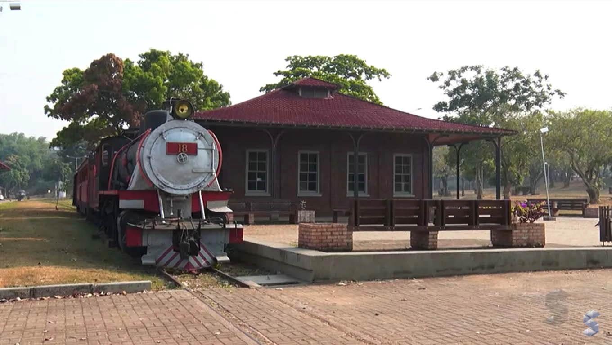
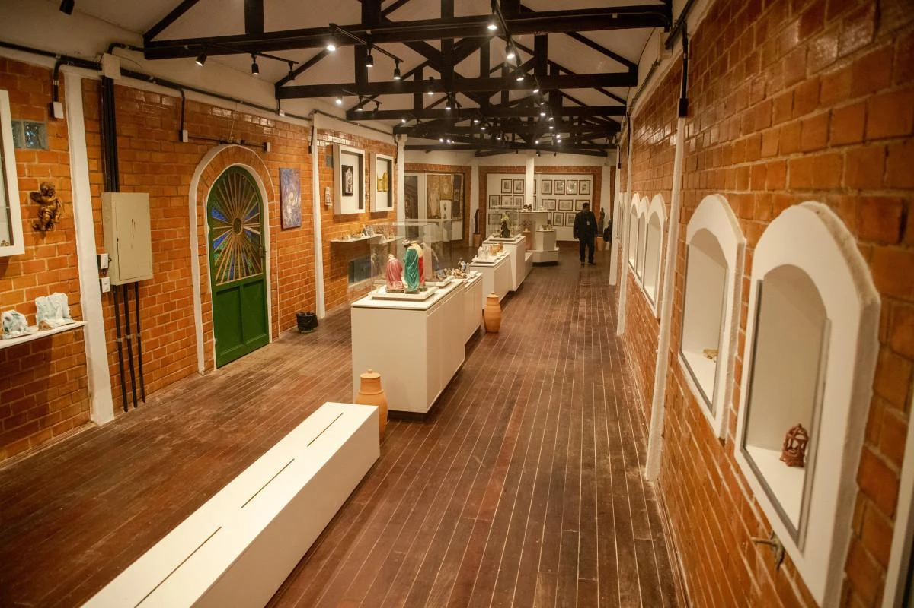
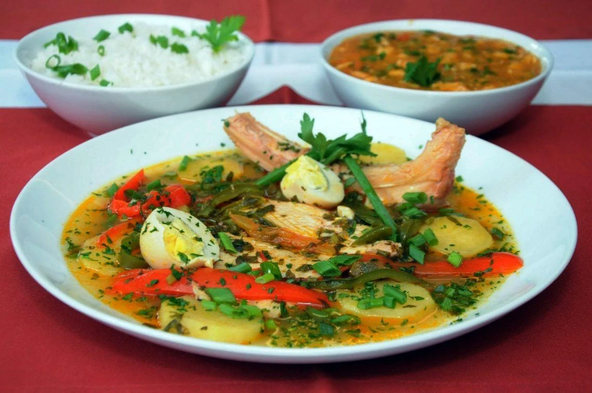
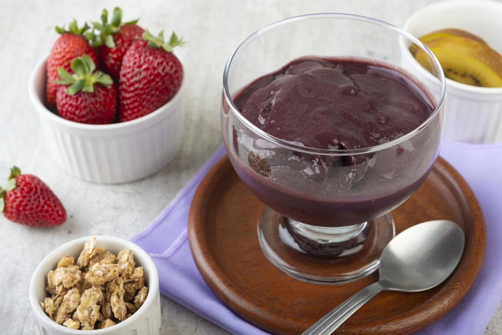
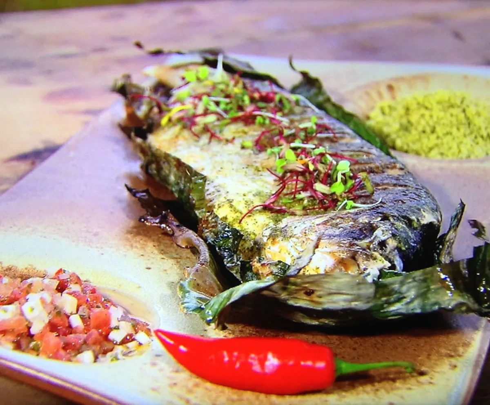

Capital
Porto Velho
Conheça destinos, culturas, sabores e paisagens de todas as regiões
brasileiras.
Destinos, culturas e paisagens
incríveis te esperam.
Rondônia é um estado localizado na Região Norte do Brasil, conhecido por sua rica biodiversidade amazônica, rios imponentes e importante papel histórico durante o Ciclo da Borracha. O estado abriga extensas áreas de floresta, além de oferecer atrações profundamente ligadas à natureza, às tradições ribeirinhas, indígenas e à história da ocupação da Amazônia brasileira.

Porto Velho
Aproximadamente 237.754 km²
Cerca de 1.751.950 habitantes
Norte

Localizada em Porto Velho, é um dos maiores símbolos históricos da ocupação da Amazônia, construída no início do século XX. Ficou conhecida mundialmente como a "Ferrovia do Diabo" devido aos milhares de trabalhadores que perderam a vida por doenças tropicais durante a sua colossal construção

Situado no município de Costa Marques, na fronteira com a Bolívia (Vale do Guaporé), é uma impressionante fortaleza militar do século XVIII. É considerada a maior edificação da coroa portuguesa construída fora da Europa durante o período colonial.

Área de preservação ambiental que abriga o ponto mais alto do estado (o Pico do Trabalho). Possui cachoeiras, terras indígenas, trilhas espetaculares e uma transição única entre a Floresta Amazônica e o Cerrado, sendo o principal destino de ecoturismo e aventura.

O tambaqui é o rei dos rios da região e Rondônia é uma das maiores referências nacionais na sua criação. A caldeirada é um cozido robusto do peixe com ovos, batatas, tucupi e cheiro-verde, servido borbulhando com um pirão escaldado.

O mousse de açaí é uma sobremesa típica da Região Norte, preparada a partir da polpa do açaí misturada com ingredientes como leite condensado e creme de leite. Possui textura leve e cremosa, além do sabor marcante da fruta amazônica. É uma opção refrescante muito apreciada em Rondônia e em outros estados da Amazônia.

O peixe na folha de bananeira é um prato tradicional da culinária amazônica, bastante apreciado em Rondônia. Geralmente é preparado com peixes de água doce, como tambaqui, pirarucu ou surubim, que são temperados com ervas e especiarias regionais e assados envoltos em folhas de bananeira.
A melhor época para visitar é no "verão amazônico" (maio a setembro). É quando o nível dos rios baixa, revelando belíssimas praias fluviais de água doce e facilitando o acesso terrestre aos parques.
A melhor época para visitar é no "verão amazônico" (maio a setembro). É quando o nível dos rios baixa, revelando belíssimas praias fluviais de água doce e facilitando o acesso terrestre aos parques.
Porto Velho: Perfeita para quem quer entender a história da ferrovia, passear de barco pelo Rio Madeira ao pôr do sol e conhecer os mercados municipais.
Porto Velho: Perfeita para quem quer entender a história da ferrovia, passear de barco pelo Rio Madeira ao pôr do sol e conhecer os mercados municipais.
Não deixe de experimentar os peixes da bacia amazônica (além do tambaqui e pirarucu, prove o jaraqui e o tucunaré), feitos na brasa ou em moquecas.
Não deixe de experimentar os peixes da bacia amazônica (além do tambaqui e pirarucu, prove o jaraqui e o tucunaré), feitos na brasa ou em moquecas.